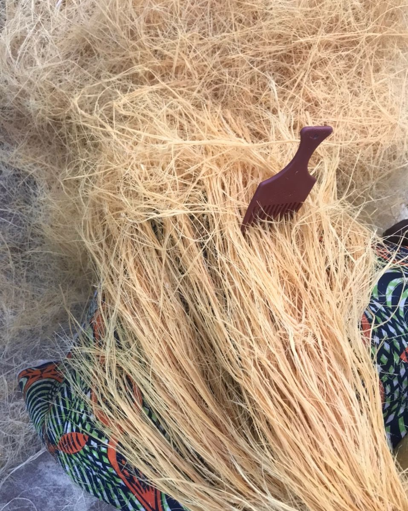

Ipebi Chronicles
Exploring the rich stories and culture of Ipebi Land
Exploring the rich stories and culture of Ipebi Land
Discover the beauty, culture, and history that make our land unique.

Ayanolu, known as Ayandugba founded ipebi community formally known as Ayandugba community in the 12th century. Ayanperuwa, his son Ayanolu, and his family migrated together with the sons of Oduduwa, Prince Oshifaderin and his brother Prince Oshile, members of their families and other princes and Read more...

Itanpade (masquerade festival):This occurs every Saturday before Easter celebration. It showcases several masquerades being celebrated in Ipebi, it involves prayers, dance and lots of merriment. Read more...
Our leaders play a crucial role in shaping the future and preserving the rich culture of the land. Get to know the individuals who contribute to the well-being of our community. Read more...

Omo fija gbile ni Ipebi, Omo o fi ija gbile baba re | Omo Olugbosan, Omo Olugbo ma ya rosi, Koya rosi, Aworo a won Read more...
Thank you for taking a journey through the tapestry of our village. From the echoes of our history to the pulse of our daily activities, and the vivid snapshots in our gallery, you've glimpsed the essence of our community. As you depart, may the spirit of our village stay with you, weaving its stories into the fabric of your memories. Until we meet again, safe travels and cherished memories.